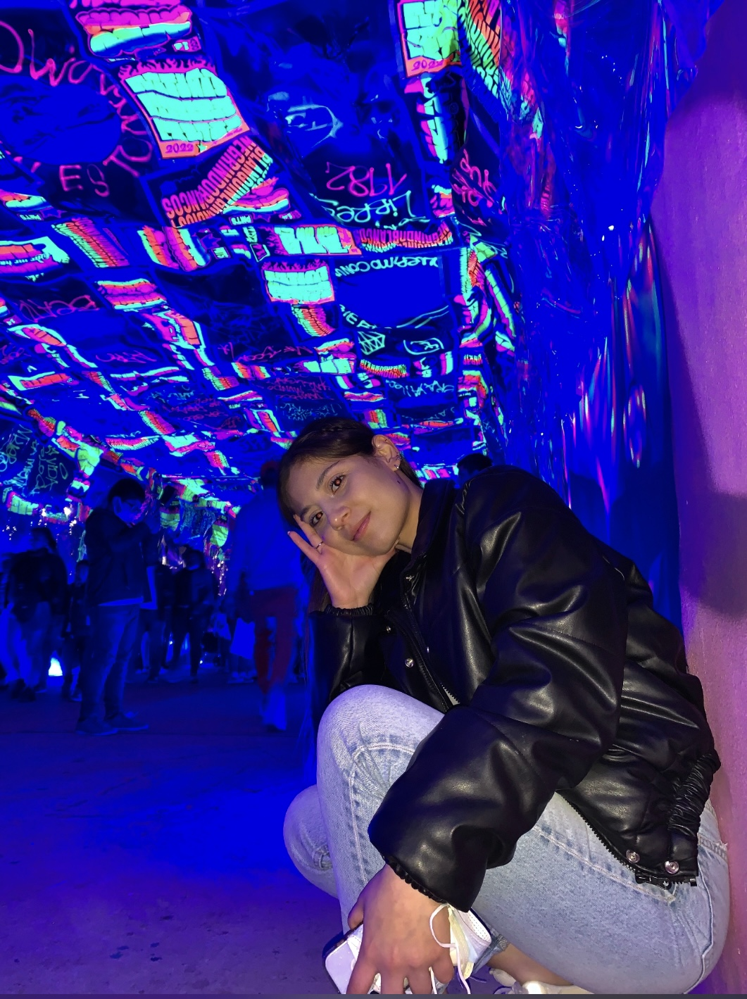
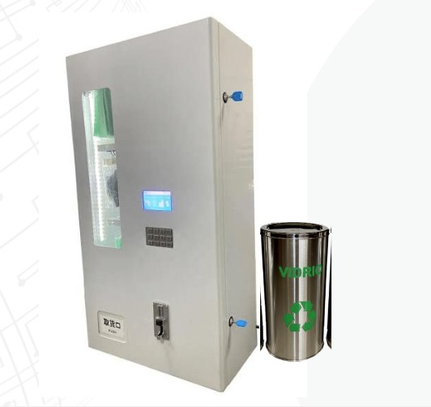
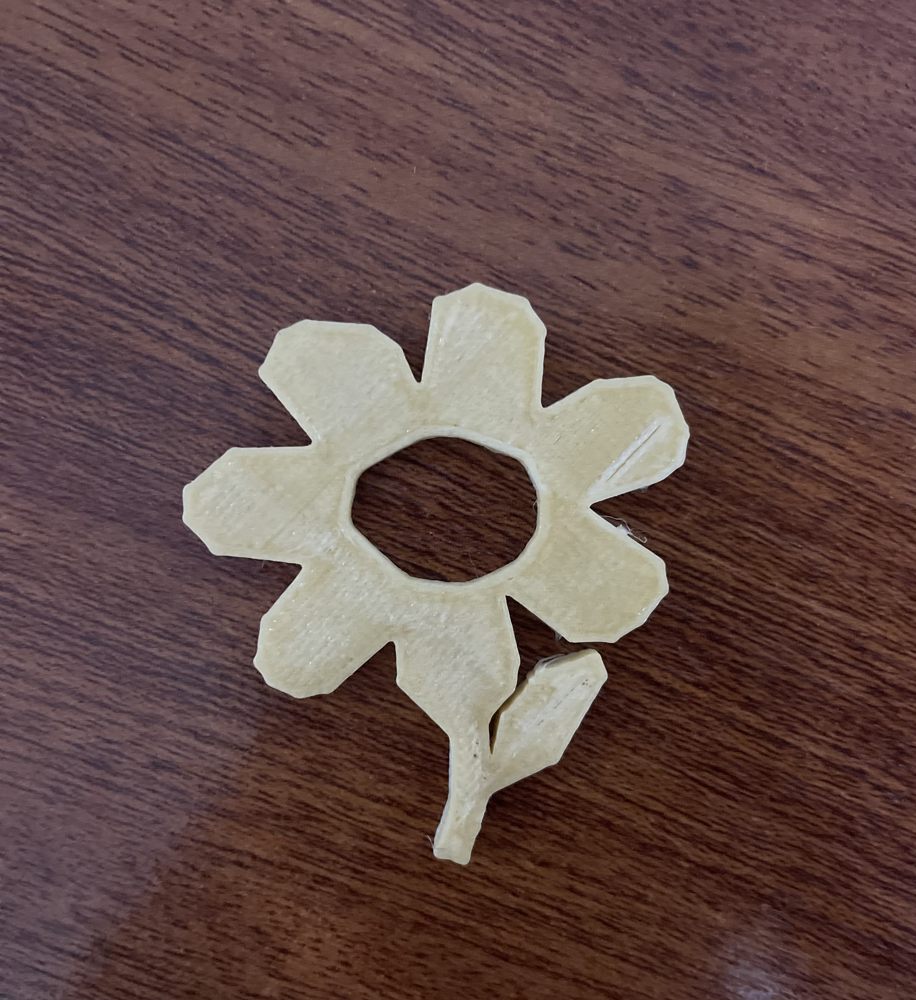

|  |
SOBRE MI |
Soy Kiara tengo 25 años de edad, perserverante
y resiliente. Me considero una persona sumamente capaz de lograr sus objetivos y metas
planteadas, una persona empática y respestuosa, con fácil adaptación a grupos de estudios,
sociales y laborales. |
 |
MI CARRERA |
Desde muy pequeña tuve un inclinación por la creatividad y el arte, sin embargo,
al pasar de los años terminé trabajando en un rubro más administrativo y estratégico, por ello, al momento de decidirme
por una carrera profesional obté por Publicidad y Marketing Digital, que vincula 2 sectores de mi interés. Actualmente me
encuentro en el último año de mi carrera para emprender mi vida profesional como publicista y marketera. |
|  |
PROYECTO |
Quisiera aprovechar el curso de Laboratorio de Innovación 2, para realizar el proyecto de una
máquina dispensadora de mascarillas para prevenir el COVID-19, este dispensador estaría colocado en los centros de salud de distritos de bajos recursos que requieran
de esta medida sanitaria, siendo la adquisición de estos productos totalmente gratuitos, asimismo, contaría con un tacho de reciclaje, para residuos de aluminio, como las
latas de leche, para darles un nuevo uso e implementarlos en la elaboración de más máquinas dispensadoras de mascarrillas. |
|  |
MISIÓN |
Lo que espero de este curso es crear un producto que pueda aportar a la sociedad, ya sea del cuidado
preventivo sanitaria, en el sector ecológico o tecnológico, para que pueda servir de soporte. |